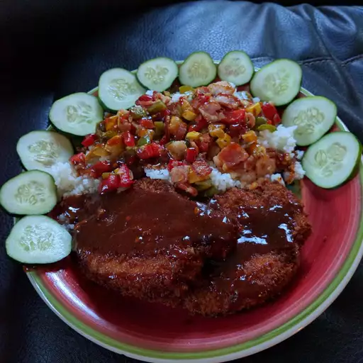

Tonkatsu Recipe

Description
These breaded and fried pork cutlets make a traditional Japanese dish which is very simple and easy to make. Serve with sticky rice and tonkatsu sauce and enjoy! Also great if substituted with chicken breasts.
Ingredients
- 4 (4 ounce) boneless pork chops
- salt and ground black pepper to taste
- 2 cups oil for frying, or as needed
- ¼ cup all-purpose flour
- 1 egg, beaten
- ¾ cup panko (Japanese-style bread crumbs)
Steps
- Place the pork chops between two sheets of heavy plastic (resealable freezer bags work well) on a solid, level surface. Firmly pound the pork with the smooth side of a meat mallet to a 1/4-inch thickness (about .75 cm). Season with salt and pepper to taste.
- Pour oil into a skillet about 1/2 inch (1.25 cm) deep. Heat the oil over medium-high heat to 375 degrees F (190 degrees C).
- Place the flour, egg, and panko crumbs in separate bowls. Coat each cutlet in flour, then egg, and finally in bread crumbs. Tap off any loose crumbs.
- Fry the cutlets until golden brown and cooked through, about 4 minutes per side. Drain on paper towels.